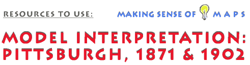

This is an archived copy of History Matters, provided by the Roy Rosenzweig Center for History and New Media. To explore this content in a new interface, visit Who Built America?.

 |
 The forks of the Ohio River have played an important role in American history. The location of Fort Prince George, Fort Duquesne, and Fort Pitt at this point where the Allegheny and Monongahela meet underscores the Ohio's significance in the French and Indian War. Later this spot evolved into one of the premier industrial cities in the world, Pittsburgh, Pennsylvania. To understand part of that evolution, examine the following three images. Use the checklist in "Where Do I Begin?" to evaluate these materials. Note that not all items in the checklist will be applicable to all images. The first two images are panoramic views of Pittsburgh. Panoramic images are not maps, but they have some of the properties of maps. Before beginning the analysis, see Panoramic Mapping, A Popular View of Victorian American Cities and Towns on the Library of Congress American Memory web site. This should help place panoramas in their historical context and explain how they differ from maps. Examine the 1871 panoramic view of Pittsburgh. Using this image, answer the following questions:
Stream junctions are natural meeting places. In the age of steamboats the junctions of navigable streams were especially advantageous locations for towns. The relatively flat promontory of land between the two rivers offered a good location for development of a settlement. The extensive use of coal as fuel for transportation and in manufacturing gave rise to the label the Smoky City. It is interesting to note that the city was probably far smokier, as inspection of the chimneys in the image shows no smoke. It must have been a very hot summer day when no one was cooking a meal if the image is to be believed. Traffic is heaviest on the Monongahela River. Most of the city's iron works were on the Monongahela because it was used to reach the major source of coal for the iron making process. Proximity to the coking coals of the Monongahela Valley was one of the important factors in Pittsburgh's rise to prominence as an iron and later steel center. Some of the factories are three and four stories, as are some commercial buildings. However, the tallest structures other than smoke stacks are church spires. What does this suggest about the role of religion in American life in the 1870s? Railroads were just emerging as an important part of the nation's transportation system. The advent of steel rails would allow the movement of much heavier loads at greater speeds. Steamboats were still effective competition for the nascent rail industry. The quality of life in 1871 Pittsburgh probably left much to be desired. This can be inferred from the density of buildings, the lack of open spaces, and the smoky environment -- keep in mind that the artist probably underrepresented smoke in this image to show details. Next, examine the 1902 panoramic view of Pittsburgh. How has the city changed over time? How might you explain these changes? Changes in transportation, industrial, and building technologies were major factors. Other factors such as the presence of entrepreneurs like Andrew Carnegie and Henry Frick are even evident from the panorama. Consult the listings of buildings along the bottom margin to find the buildings connected to these two men. Notice, too, how skyscrapers, the cathedrals of capitalism, have superceded churches as the dominant element in the skyline. To get a feel for what the city was like, examine the large scale plat maps found in the Historic Pittsburgh Project. Visit the Map Project Description to learn more about these maps. To get a sense of the city and its various neighborhoods, examine several parts of the city. The 1903 Supplement to Volume 3 Central Pittsburgh - The Point offers maps of the areas that are prominently displayed in the 1902 panoramic view of Pittsburgh. Start by examining the legend and then pick one or more of the plates (I suggest plates 8 and 14). The two cathedrals, religious and capitalistic, are evident here. Next, try 1904 Volume 1 - East End of Pittsburgh (including Oakland and Squirrel Hill). Compare plates 31 and 4. Which of these neighborhoods has a higher status? How did you decide? Which one has the largest lots, most green space, and is nearest the railroad?
|
|||
 |
||||